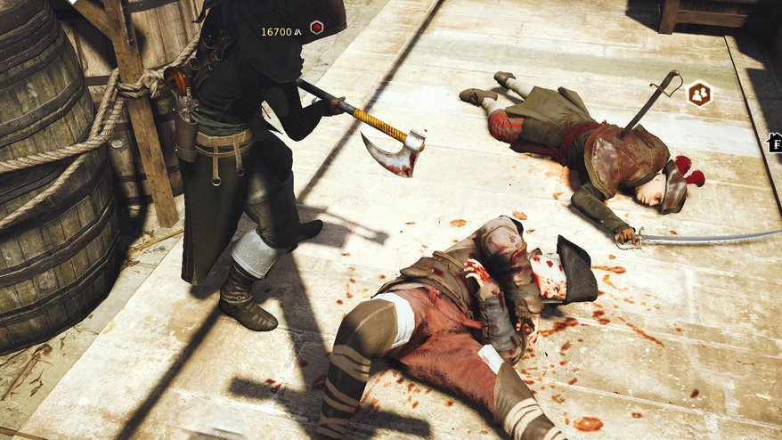

_____Contact Information
Phone: (509)123-4567
Support Line: 1-800-345-6789
Email: GuruGammers@Live.com
Email: GoGames@gmail.com
Address: 1234 East 29 Ave. Spokane, Wa
Assassins Creed Unity
The act of hunting and efficiently dispatching an important target has been incidental to the series for too long, so I'm glad Unity does it justice. Targets are hidden away in in sandbox locations—castles, prisons, palaces—that you have to crack like a violent puzzles. At the start of the mission Arno, poised like a fancy Batman on some dark rooftop, assesses the area to pick out gaps in the target's defence and note local disturbances that could serve as a distraction. When the mission starts you're free to find your way in and approach the target however you wish.
These missions remind me favourably of Hitman: Blood Money. The levels lack the complexity of IO's sandboxes, but manipulating them is great fun. I whipped a cover off a hidden stash of food in front of a starving crowd. They flocked angrily to the cart and offered cover that got me closer to my target. I've set fire to sniper towers to expose targets, dabbled with poison and done other terrible things best left to discovery.
These missions are facilitated by a new stealth system. Unity finally has the crouch-walk the series has always needed, which means you can dart between cover spots without standing casually upright in full view like a gleaming beacon of guilt. There's also a clunky cover system that I found far too fiddly to use, and a new weapon—the phantom blade—a wrist-mounted miniature crossbow that lets you kill targets silently at range or send them berserk to cause a distraction.
Assassinations may be good, but the campaign is padded out with numerous set-up missions. While these are generally fine, and Arno puts in a good turn as an affable diet-Ezio, you're still following NPCs along dramatic rooftop routes, stealing things from heavily guarded areas, tackling street thieves and saving civvies from criminals—very familiar stuff for series fans. The close focus on everyday assassin business also puts more pressure on Assassin's Creed's core traversal systems, and while the freerunning moveset has been expanded for Unity, it can't quite handle the artfully crooked geometry of Paris.
There are now separate commands for freerunning up and down buildings, which is useful, but movement in all directions lacks precision. Simply climbing into a window can be a nightmare. Arno will vault across the gap, scrabble above it, drop below it, anything but get into the damn room. The window dance only grows angrier under fire.
There are dozens of simple manoeuvres like this that should be effortless, but aren't, and the streets of Paris are littered with detritus that can cause Arno unexpected indecision. Look out in particular for the assassin's greatest enemy, the small box, which Arno will sometimes mount as though it's the highest point in the world and take some coaxing to leap off. Attempting to climb a lumpy object like a market stall will cause moments of mid-air shivering as the movement system seems to shuffle through its library of thousands of animations for a solution. The ' leap into distant hay bale' command is the same as the 'climb down building' command, which has caused annoyance more than once.I could list more. 80% of the time things work quite nicely, but for a game so reliant on traversal there's too much frustration. The system can make impossible leaps and spins look natural and beautiful, but it too often fails to divine the player's intent while executing the flair. Assassin's Creed has always had these problems, but the complex higgledy-piggledy streets and rooftops of Paris compound them. After a while I came to recognise certain angles and asset arrangements best avoided for the sake of speed.
Combat has been refreshed, too, with good intent but mixed results. In Black Flag and Assassin's Creed 3, you were immortal. You could chain execution moves together to dice up entire regiments without taking a hit. Not so in Unity. The counter button has been replaced by a parry command. Time the parry perfectly and Arno will execute a countering blow that will put the enemy off balance and open them up to follow up strikes, and brutal kill-moves when they're damaged enough. Arno can only suffer a few blows himself before being unceremoniously run-through, and can quite easily be shot to death in the middle of a fight.